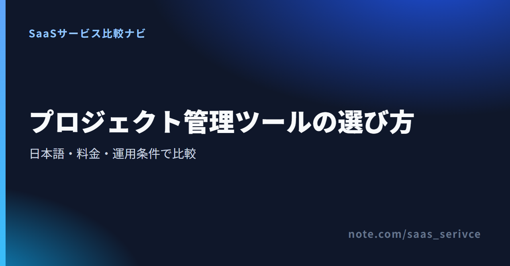
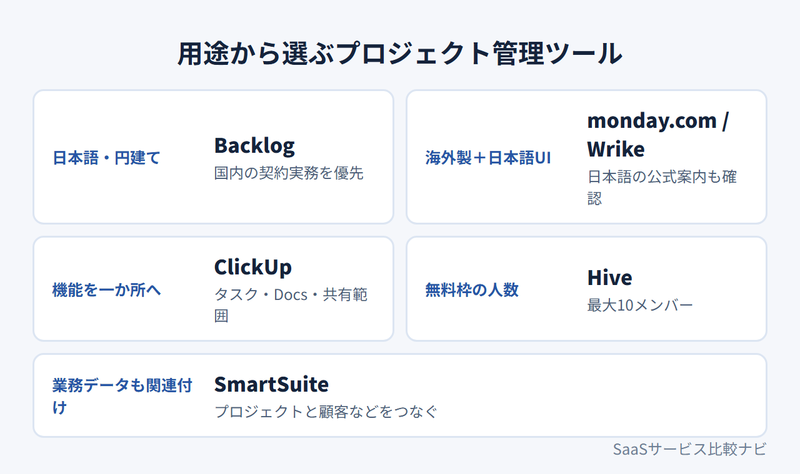
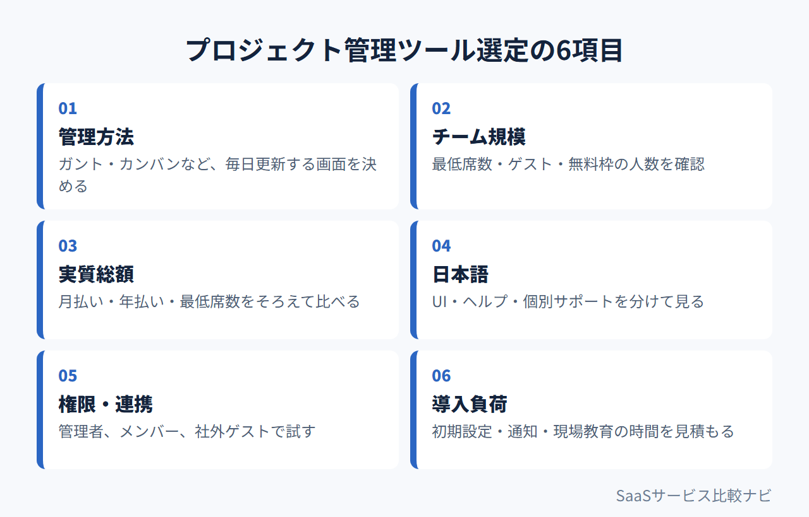
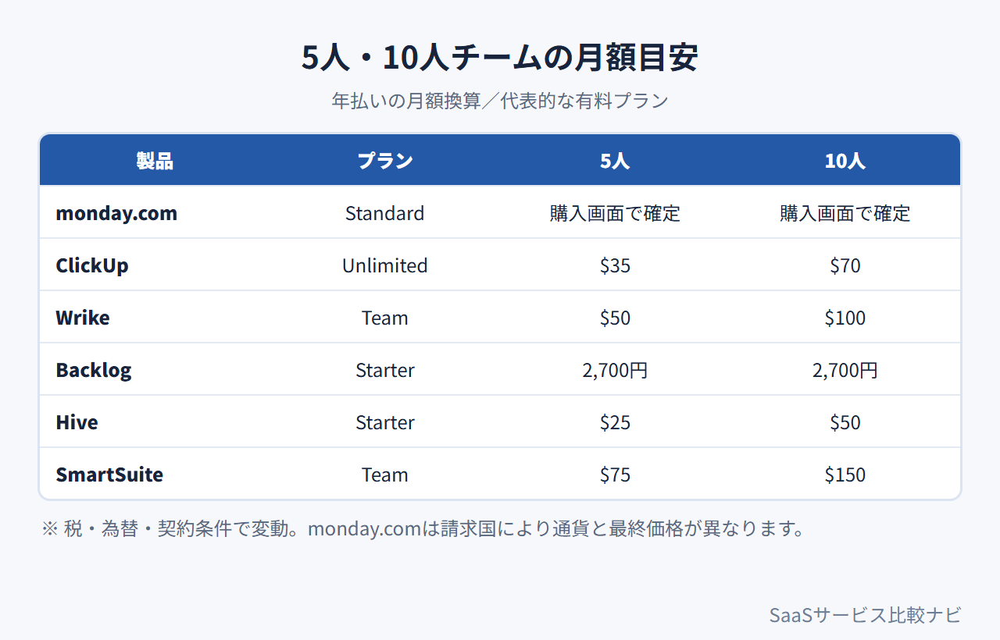

プロジェクト管理ツール比較【2026年】料金・日本語で選ぶおすすめ6製品
プロジェクト管理ツールは、案件の進み具合をチームで共有するサービスです。タスクごとに担当者や期限を決め、関連資料もまとめて管理します。
料金や無料枠だけでなく、日本語表示や社外共有の条件も製品ごとに異なります。比較の中心は、6製品の特徴と5人・10人の総額。日本から契約するときの注意点や解約条件も取り上げます。
プロジェクト管理ツールおすすめ6製品の早見
- monday.com：年払い1,300円/人〜・無料2席
- ClickUp：年払い$7/人〜・無料枠あり
- Wrike：年払い$10/人〜・無料枠あり
- Backlog：月額2,700円〜・無料10人
- Hive：年払い$5/人〜・無料10人
- SmartSuite：年払い$15/席〜・14日試用
迷ったらmonday.comがおすすめです。日本語UIと日本語ヘルプを備え、無料枠は2席まで。カード不要の14日間トライアルも選べます。
リンク先では、無料で始める条件と日本向け料金が分かります。
プロジェクト管理ツールを比較するときの6つのポイント
最初に決めるのは、管理方法とチーム規模です。その条件で実質総額を計算。次に見るのは、日本語対応や権限です。 比べる項目には、連携機能と初期設定の負担も追加。6項目への答えを契約前にチームで揃えると、候補を絞りやすくなります。


ガント・カンバンなど必要な管理方法を決める
工程と依存関係を時系列で追いたいのか、作業を状態別の列で動かしたいのかを決めます。判断基準は「毎日、どの画面を更新するか」です。
メンバー数・最低席数・ゲストの扱いを確認する
「メンバー」と「課金席」は同じとは限りません。社内5人と取引先2人なら、全員に有料席が必要か、取引先をゲストとして招けるかを調べます。
月払い・年払いとチーム総額を比べる
5人と10人の総額には、最低席数や無料枠を反映します。年額を一括で払うかどうかも計算に入れ、定額制と人数課金は分けて比べます。
日本語UI・ヘルプ・個別サポートを分けて見る
画面が日本語でも、問い合わせ対応まで日本語とは限りません。管理者が請求・権限の案内を日本語で読む必要があるかを決めます。
権限・外部連携・社外共有の条件を整理する
「管理者だけが設定を変えられる」「取引先には指定案件だけを見せる」など、必要な状態を書き出します。試用時は、設定画面で再現できるかを試します。
初期設定と現場教育にかかる負荷を見積もる
テンプレートと権限を設定し、通知まで整えます。そこまで何時間かかるかを見積もりましょう。試用期間内に、チームへの説明まで終えられるでしょうか。
おすすめ6製品の特徴と向いているチーム
6製品の違いは、無料枠と料金体系だけではありません。日本語で使える範囲や契約条件にも差があります。 以下、製品ごとの特徴と注意点。
monday.com：日本語UIで柔軟に管理したいチーム向け

画面は日本語表示です。無料で2週間使え、カード登録も不要と案内されています。
Freeは最大2席で、3ボード、3 Docs、200を超えるテンプレートを利用できます。アカウントの表示言語は日本語。ヘルプセンターにも日本語版があります。外部の取引先を招く共有ボードはStandard以上、招待者だけに見せる非公開ボードはPro以上です。
請求通貨と最終価格は請求国によって変わり、購入画面で確定します。日本向け公式ページの年払い表示はBasic 1,300円、Standard 1,650円、Pro 3,200円／人／月。支払いには、JCBやPayPalを含む決済手段を使えます。請求書の取得先は、管理者の請求画面です。既存顧客が契約期間末で解約する場合は、終了日の30日前までに通知が必要。初回購入では、購入後30日以内に書面で申請すると、未使用期間分が日割り返金の対象になります。
4〜5人は5席、6〜10人は10席のバケット課金です。料金は実人数ではなく購入席数で決まり、年払い額も購入席数から算出します。
ClickUp：タスクや情報を一か所へ集約したいチーム向け

英語表示の画面には、無料で始められ、カード登録も不要との案内があります。
Free Foreverでは、タスクとメンバーが無制限です。ただし、上限はストレージ60MB、Spaces 5件。添付ファイルや部署別の領域が増えるチームは、先に上限を見ます。有料プランなら、FoldersやListsに加えてタスクとDocsにも共有権限を設定可能。Space単位のメンバー権限はEnterpriseです。
日本語UIはベータ版。年払いの月額換算はUnlimited $7、Business $12／ユーザー。月払いはそれぞれ$10、$19です。支払いはVisa／Mastercard／American Express／Discoverに対応。請求書は請求履歴からダウンロードできます。サポートは24時間対応ですが、日本語での有人対応と日本発行カードの可否は明記されていません。
60MBの容量と日本語表示は、無料枠で試します。有料プランでは、取引先に与えられる権限の範囲を見ます。
Wrike：複数案件と権限を日本語で管理したいチーム向け

画面は日本語表示で、「無料で試す」ボタンがあります。
Wrikeには$0のFreeと、カード登録不要の14日間トライアルがあります。画面と公式サイトは日本語対応で、ヘルプも日本語です。Teamでは案件ごとのタスクをガントチャートで管理可能。Business以上では、アクセスロールと複数案件を横断するワークロード管理が加わります。
有料プランは年払いの月額表示で、Team $10、Business $25／ユーザー。30席以下は5席単位で販売され、請求書はUSDで発行されます。日本発行カードに対応するかは不明。一般有料契約の具体的な解約適用日も分からないため、必須条件なら契約前に問い合わせます。
14日間で、Teamのガントチャートで足りるかを見極めます。足りなければ、Businessの権限とワークロードが必要かを判断します。
Backlog：日本語・日本円・国内支払いを優先するチーム向け

日本語のトップページには、支払い情報なしで無料体験を始められる案内があります。
Backlogの現行Freeは10ユーザー、1プロジェクト、総容量100MBです。Starterは月額2,700円で、30ユーザー・5プロジェクトまで。Standardは月額16,000円で、ユーザー数無制限・100プロジェクトです。いずれも税別で、年払いは月払いより5％安くなります。
2027年1月1日、Freeは上限5人の新プランへ自動移行します。すでに6〜10人で使っているFreeは継続できますが、新しいメンバーは追加できません。有料の既存契約への適用は、同日以降の最初の更新日から。
Freeでは利用人数、有料では更新日を起点に、2027年の移行条件を見ます。
Hive：無料枠を重視するチームの補助候補

英語のトップページには、無料で始められ、カード登録も不要との案内があります。
HiveのFreeは最大10ワークスペースメンバーで使えます。ストレージ200MBとAIクレジット1,000を含み、タスクとノートは無制限。有料プランには、カード登録不要の14日間トライアルがあります。支払いには主要クレジットカードを使えます。
年払い表示はStarter $5、Teams $12／ユーザー／月。料金ページとヘルプページに、日本語UIや日本語サポートの案内はありません。対応の有無は、公開情報だけでは判断できない状態。導入前に無料枠で、画面言語と問い合わせ方法を確かめておきます。
200MBの容量が足りるか、日本語で使い続けられるかを無料枠で試します。
SmartSuite：プロジェクト管理を業務基盤へ広げたいチームの候補

英語画面の右上に、無料トライアルの開始ボタンがあります。
SmartSuiteのシステムUIは、日本語を含む多言語に切り替えられます。ユーザーが入力したデータは、自動翻訳の対象外。プロジェクトや顧客など、別々のテーブルやSolutionにあるレコードを関連付けられます。タスクと業務データをひも付けて管理したいチーム向け。常設無料プランはなく、Professionalを14日間、カード不要・自動課金なしで試せます。
Teamは年払い$15／席／月で、最低3ユーザー。Professionalは年払い$32／席／月で、最低5ユーザーです。Solution単位の権限は全プラン、テーブル・フィールド単位はProfessional以上。請求書払いは、Sales経由で契約するEnterprise／Signatureに限られます。日本語での有人対応は、公開情報に明記されていません。
試用中にレコードを関連付け、必要な権限単位を設定します。そのうえで、Professionalが必要かを判断します。
料金は5人・10人のチーム総額と無料条件で比べる
チーム総額は人数だけでは決まりません。最低席数と月払い・年払いの違いも計算の対象。請求通貨と無料枠も含めます。 以下は、各社の公開プランを人数に当てはめた価格例。プランの機能は製品ごとに異なるため、単純な価格順位にはなりません。必要な管理方法と権限を先に決め、条件を満たすプラン同士で比べてください。
常設無料プランと期間限定トライアルを分ける
SmartSuiteを除く5製品には、常設無料プランがあります。SmartSuiteで試せるのは14日間トライアルのみ。無料で使い続けたいなら、ボード数と容量を見ます。プロジェクト数とSpaces数の上限も忘れずに。
最低席数を含めて5人・10人の総額を計算する
- monday.com：年払い表示で、5人はBasic 6,500円・Standard 8,250円・Pro 16,000円／月、10人は13,000円・16,500円・32,000円
- ClickUp：年払いの月額換算で、5人はUnlimited $35・Business $60、10人は$70・$120
- Wrike：年払いの月額表示で、5人はTeam $50・Business $125、10人は$100・$250
- Backlog：現行Starterは5人・10人とも月額2,700円、Standardは月額16,000円
- Hive：年払いの月額表示で、5人はStarter $25・Teams $60、10人は$50・$120
- SmartSuite：年払いで、5人はTeam $75・Professional $160、10人は$150・$320
たとえば、ClickUp Unlimitedの5人分は年払いの月額換算で$35。1ドル=158円換算（執筆時点の目安。為替で変動）なら約5,530円です。実際の請求額は、契約人数や請求周期、税の扱いで変わります。

年払い・月払い・請求通貨の違いを確認する
ClickUpとSmartSuiteは月払いの料金も公開していますが、上の総額は年払い条件です。そのほか、monday.com、Wrike、Hiveも年払い表示が基準。請求通貨はBacklogが日本円、残る4製品はUSDです。monday.comは請求国によって通貨と価格が変わります。社内申請には、購入画面の通貨と年額を転記します。
購入画面に出る通貨と席数バケットを使います。請求期間をほかの製品と揃えて比べましょう。
日本からの契約は日本語・支払い・請求書を確認する
日本語UIがあっても、ヘルプや個別対応まで日本語とは限りません。 支払い手段と請求通貨を見たうえで、請求書をどこから取得するかも押さえます。
日本語UIと日本語サポートを分けて確認する
日本語UIと日本語の公式案内がそろうのは、monday.com、Wrike、Backlogです。ClickUpの日本語UIはベータ版。SmartSuiteは日本語UIへ切り替えられますが、日本語での有人対応は公開情報に明記されていません。Hiveは、UIとサポートの日本語対応を公式一次情報で確認できていません。
日本発行カード・JCB・PayPal・銀行振込の可否を見る
決済手段では、monday.comがJCBとPayPalを含む複数の方法に対応しています。Backlogは銀行振込に対応。カードはVisa／Mastercard／American Expressに対応。JCB／Discover／Diners Clubも使えます。HiveとSmartSuiteは主要クレジットカードに対応。ClickUpとWrikeの日本発行カードへの対応は、契約前の確認が必要です。
請求書の取得方法と税務処理を確認する
請求書は、monday.comなら管理者の請求画面から取得できます。Backlogはプラン画面か支払い履歴、ClickUpとHiveは請求履歴から。Wrikeの請求書はUSDです。SmartSuiteで請求書払いを選べるのは、Sales経由の契約のみ。対象プランはEnterprise／Signatureです。海外SaaSの税務上の扱いは契約主体や請求内容で変わるため、必要に応じて税理士に確認してください。
購入画面に表示された通貨と請求先情報を、そのまま社内申請へ転記します。
USD請求書を経費処理できるか、社内で確かめます。日本発行カードが必須なら、契約前にWrikeへ問い合わせます。
Backlogは銀行振込かカードかを決め、支払い周期を社内処理と合わせます。
試用中に初期設定と更新ルールを固める
試用では、初期設定にかかる時間を測ります。全員が同じルールで更新できるかも試しましょう。 比べるのは、同じ小規模案件。候補ごとに案件を変えると、違いが分からないからです。
実案件を1件だけ登録して管理方法を試す
小規模案件にタスクを10件登録します。担当者と期限を決め、資料も添付。週次の確認だけで遅れを見つけられるかを試します。
権限・ゲスト・通知の初期設定を確認する
社内では管理者と一般メンバーに分け、取引先は社外ゲストとして招きます。通知は、担当変更や期限前など必要な場面だけに。コメントの通知が多すぎないかも見ます。
入力ルールと管理責任者を決める
タスク名と期限の付け方を決めます。完了条件と資料の置き場所は1枚のルールにまとめ、管理責任者を置きます。
ClickUpでは、60MBに収まる資料を使い、取引先向けの権限も設定します。有料プランで共有できる範囲と、無料枠の容量を分けて判定します。
解約・ダウングレード前にデータと更新日を確認する
契約前に押さえるのは、自動更新日と返金条件。下位プランへ切り替わる時期を調べ、データの書き出しも試します。 解約とダウングレードで手続きが分かれている製品もあります。
解約とダウングレードの手順を分けて確認する
- ClickUp：ダウングレードするとFreeへ移行
- Hive：月払いはBilling画面から期間末で解約。年払いはアプリ内メッセージでCustomer Successへ依頼します。料金FAQにはfinance@hive.comの連絡先もあるため、アプリ内で手続き先を確かめてください
- SmartSuite：いつでも解約でき、契約は現在の請求期間末に終了
- Backlog：下位プランの人数やプロジェクト数を超えているとダウングレード不可。有料からFreeへの変更も不可
既存顧客がmonday.comを期間末で解約する場合、終了日の30日前までに通知が必要です。返金を伴わない解約後も、支払い済み期間末まで使えますが、以後は自動更新されません。
一般有料契約の解約適用日と返金条件は、Wrikeの公開情報に明記されていません。契約前に問い合わせておきましょう。
返金条件と契約期間末までの利用可否を見る
- ClickUp：新規有料購入には30日間の満足保証あり
- Backlog：有料契約の解約後も契約期間末まで利用可能。途中解約の返金なし
- Hive：トライアルは期間満了時に自動停止
- SmartSuite：トライアル終了後も自動課金なし
解約前に必要なデータを書き出す
どの形式でタスクとコメントを残すか決めます。添付ファイルも含め、必要なデータを開ける状態にしてから手続きを始めましょう。
Hiveは契約周期によって解約窓口が変わります。Billing画面に出る契約種別と終了日を保存してから手続きします。
プロジェクト管理ツール選びでよくある質問
無料でチーム利用できる製品はどれ？
SmartSuiteを除く5製品には、常設無料プランがあります。2人ならmonday.com。人数上限を重視するなら、ClickUpか10人までのHiveが候補です。ただし、ボードやSpacesのほか、容量とプロジェクト数にも上限があるため、人数だけでは決められません。
日本語で使える海外製品はどれ？
日本語UIと日本語の公式案内がそろうのは、monday.comとWrikeです。ClickUpは日本語UIをベータ版として提供。SmartSuiteはシステムUIを日本語へ切り替えられます。日本語での有人対応が必要なら、UIとは別にサポート窓口を調べます。
個人向けタスク管理アプリとの違いは？
個人向けアプリが扱うのは、自分の期限と優先度です。プロジェクト管理ツールは、複数人の担当や進捗を共有するもの。権限や資料も管理できるため、共同作業がない人は機能を持て余す場合があります。
Asana・Jira・Trelloを掲載していないのはなぜ？
Asana、Jira、Trelloが劣るという意味ではありません。本稿では、日本語や無料枠に加え、契約実務に特徴がある6製品を検証。そのため、3製品は今回の比較対象に含めていません。
まとめ：候補を2つに絞り、同じ案件で試す
日本語対応と支払い条件を見て、チーム規模に合う候補を2つに絞ります。同じ小規模案件で試してから、本導入を決めましょう。 判断材料には、無料枠に加えて有料化後の総額と解約条件も含めます。
優先条件を1つ決める
- 日本語・円建て：Backlog
- 海外製・日本語UI：monday.com、Wrike
- 無料枠の広さ：ClickUp、Hive
- 業務データの関連付け：SmartSuite
最優先の条件を一つ決めておくと、候補が際限なく増えるのを防げます。
候補を2製品に絞る
2製品を残したら、5人・10人の総額を計算。請求通貨と支払い方法を見て、最後に解約条件を調べます。判断に必要な項目が分からないままなら、契約前に問い合わせましょう。
同じ案件と期間で試す
同じ10件のタスクを登録します。担当者と期限を揃え、同じ資料を添付。通知も同じ条件にします。終了日と更新日は予定表に入れておきましょう。
Standardの共有ボードとProの非公開ボードを分けて試します。
ClickUpは60MBの容量と、取引先に与えられる権限の範囲を判定します。
WrikeはTeamのガントチャートとBusinessのワークロードを比べます。
Backlogでは、日本円の支払いを社内で処理できるかを試します。2027年の移行条件も調べます。
Hiveは10人までの無料枠で、200MBが足りるか、日本語で使えるかを試します。
SmartSuiteでは業務データを関連付け、必要な単位で権限を設定できるか試します。
もっと詳しく比較したい方へ
- monday.comの評判を確認したい方へ：https://note.com/saas_serivce/n/nef71ee87d15a